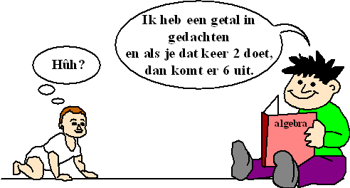
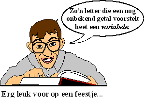

Natuurlijk kun je tegen je kleine broertje zeggen "2 × 3 = 6"
Misschien snapt hij het, misschien niet (ik weet niet hoe slim jouw broertje is)
Ik vind het trouwens een vrij flauwe opmerking. Eigenlijk niks aan! Hij weet het of hij weet het niet.
Er valt zelf niks te verzinnen.
't Is toch veel leuker om hem een raadsel te geven? Waarom zeg je niet tegen hem:

Losse stukken en Lijm
• PLUS en MIN knipt de dingen los van elkaar. • KEER en GEDEELD DOOR
plakt de dingen aan elkaar.